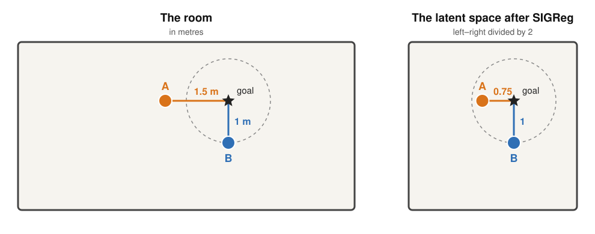
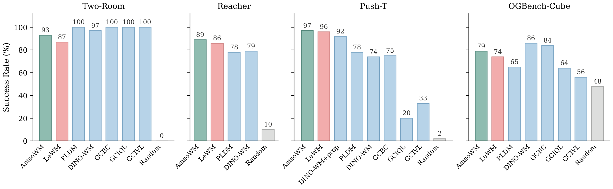
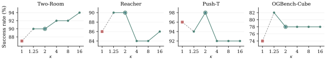

AnisoWM: Anisotropic Representations Improve Planning in JEPA World Models
- Is a latent space that avoids collapse also a good space to plan in?
- If the predictor is perfect, can a world model still choose the wrong plan?
- Do the latents of a world model really have to be an isotropic Gaussian?
Anisotropic Representations Improve Planning in JEPA World Models (Kang, Oh, Kim and Lee, September 2026) studies these questions for world models like LeWorldModel, which plan by Euclidean distance in a latent space shaped by SIGReg. The paper makes three contributions:
- A proof, in a linear setting, that accurate prediction and no collapse are not enough: with SIGReg, latent distance can rank plans differently from the task.
- ΛReg, which replaces SIGReg's isotropic target with a Gaussian whose variance in each direction is learned, while prediction and planning stay the same.
- AnisoWM, LeWorldModel trained with ΛReg, which plans more successfully than LeWorldModel on all four benchmarks tested.
In the LeJEPA post we asked how the optimal embedding distribution would change if we knew something about the downstream task. Here the task is known (planning by latent distance), and the paper places a simple bet: keep the Gaussian, but let every direction pick its own variance.
Why an isotropic latent can mislead a planner
LeWorldModel scores a sequence of actions $U$ by how close its predicted final latent lands to the goal:
Here $H$ is the planning horizon, $\hat z_H(U)$ the latent the predictor reaches after applying the actions $U$, and $z_g$ the latent of the goal image. The planner only cares about the order this cost puts plans in. So the question is whether that order matches the order of the real task cost, for example the physical distance to the goal.
A robot vacuum with a bent ruler
Take a robot vacuum in a room twice as long as it is wide, drawn below with the long side left to right. In the training videos it wanders everywhere, so its position $x = (x_1, x_2)$ spreads twice as much left–right as up–down: a standard deviation of 2 m left–right and 1 m up–down. Its wheels also slip a little, by the same amount in every direction.
SIGReg asks every latent direction to have the same spread. The simplest encoder that does this divides each coordinate by its spread:
Here $x_1$ is the left–right position and $x_2$ the up–down position, in metres. Both latent coordinates now have spread 1, as SIGReg asks. But the ruler of the latent space has changed: a metre left–right is half a unit, while a metre up–down is a full unit.
Now put the goal far away and give the planner too few steps to get there. It has to stop somewhere short, and it compares two places where it can stop: A, 1.5 m to the left of the goal, and B, 1 m below it.

In the room, A is 1.5 m from the goal and B is 1 m, so B is closer. In the latent space, A's 1.5 m left–right shrinks to $1.5 / 2 = 0.75$ units, while B's 1 m up–down stays 1 unit, so A looks closer. ($J_z$ squares the distance, which does not change which one is closer.)
| Distance to the goal | A (1.5 m left) | B (1 m below) | Closer |
|---|---|---|---|
| Real, in metres | 1.5 | 1 | B |
| Latent, after SIGReg | 0.75 | 1 | A |
The task wants B, but the planner picks A. The predictor is not to blame: it can know exactly where each plan ends. The latent space measures distance with a different ruler than the task.
Measuring every direction in units of its own spread is a sensible rule for some uses: it says how unusual a miss is. It is not the rule of a task that counts metres. When the goal can be reached exactly, the two rules agree, since both are zero at the goal. They disagree on near misses, which is where the planner ends up when the goal is out of reach.
From the vacuum to any world
The vacuum was chosen so that its spreads line up with the walls. In a real world model the state has many coordinates, and the directions in which it varies a lot can be any mix of them: a robot arm whose shoulder and elbow tend to move together, for example. To describe the spread in every direction at once, we use the covariance $\Sigma$ of the training states. For the vacuum it holds the two variances and nothing else:
Here the diagonal entries are the variances left–right and up–down, and the zeros say the two coordinates vary independently. In a general world the off-diagonal entries are not zero, and they record which coordinates move together.
Now look at the vacuum's squared latent distance from a point $x$ to the goal $x_g$. Each error is divided by its spread before squaring, so it is divided by its variance after squaring:
Here $\Delta x = x - x_g$ is the error vector, with values $\Delta x_1$ left–right and $\Delta x_2$ up–down, and $\Sigma^{-1}$ is the inverse of $\Sigma$, which for the vacuum is just $\mathrm{diag}(1/4, 1)$: one over each variance. In words: the latent space measures every error in units of how much the state varies in that direction, so errors count less in directions that varied more. This holds for any linear encoder whose latents are isotropic:
A linear encoder $z = Ax$ turns an error $\Delta x = x - x_g$ into the latent cost
Here $A$ is the encoder's matrix and $M$ the metric it induces on states. Let $A$ be invertible and $\Sigma$ the state covariance (the real-world spread of the training states in every direction). If the encoded covariance is isotropic $\Leftrightarrow A \Sigma A^\top = sI$ for some $s > 0$, then $M = s\,\Sigma^{-1}$:
Putting $M$ back into the latent cost gives:
Consequently, the latent cost ranks plans like the task only if the task also weighs each direction by one over its variance. The vacuum's task weighs every direction the same, so the two rankings can differ, as they do for A and B.
So far we assumed the latents are exactly isotropic. A trained world model is not built that way: SIGReg only pushes the latents towards isotropy, while the prediction loss shapes them too. So does training actually end up with isotropic latents? In the linear case, Proposition 1 says yes: the trained model ends up with the same squeezed ruler as the vacuum, $\Sigma^{-1}$:
Take the simplest world: everything is linear and Gaussian, and every step adds a little random noise of size $\eta$. Train a linear encoder and a linear predictor with prediction loss plus SIGReg, and look at the best possible result of training. It has:
- No collapse: the encoder keeps all information about the state, even though training is free to collapse.
- Perfect prediction: the predictor is as accurate as the noise allows, and as $\eta$ shrinks, the prediction loss goes to zero.
- The squeezed ruler: as $\eta$ shrinks, the latent distance to the goal becomes $q\,(x - x_g)^\top \Sigma^{-1} (x - x_g)$ for some scale $q > 0$, the same ruler as for isotropic latents.
So the model is as good as it can be on both losses, and still measures distance like the vacuum's latent space.
So a well-trained model ends up with the vacuum's ruler. How much does this ruler cost the planner? Let $J(U)$ be the task cost of a plan $U$: the real distance from where the plan ends to the goal. The regret of a plan is how much worse it is than the best plan:
Here $U$ is the plan the latent planner chose, and the minimum runs over all plans $U'$ it could have chosen. The regret is zero when the planner picks the best plan. (The authors square the distance, which changes the size of the regret but not which plan is best.) For the vacuum, the planner picks A, 1.5 m from the goal, while B is 1 m away, so the regret is $1.5 - 1 = 0.5$ m. Theorem 1 shows that this gap stays even when prediction becomes perfect:
For any dimension $D \geq 2$, any finite horizon $H$ and any state covariance $\Sigma$ that is not a multiple of the identity, there is a linear control problem with bounded actions in which a model trained with prediction loss plus SIGReg plans worse than it should. As the noise $\eta$ shrinks, the model predicts better and better, one step ahead and over the whole horizon, but the regret of its plans does not shrink to zero: it settles at a positive value $\Delta_H$.
The reason: the end points the planner can reach form a ball. The task picks the point of the ball closest to the goal in plain Euclidean distance, while the latent planner picks the closest point under the squeezed ruler $\Sigma^{-1}$. For a goal outside the ball, unless it lies exactly along one of the main directions of $\Sigma$, these two points differ. The vacuum's choice between A and B is a small version of this.
To check that the same happens with a neural network, the authors train an MLP encoder and a predictor with prediction loss plus SIGReg on a two-dimensional system, much like the vacuum: the actions and the noise are the same in every direction, but the dynamics make the states spread more in some directions than in others. The goals are placed out of reach, so the planner has to choose a near miss. They repeat the training for several noise levels $\eta$, with ten seeds each:
![(a) Planning geometry: a grey disc of reachable outcomes below a starred goal. A dotted circle around the goal is the Euclidean task cost; a tilted red ellipse is the SIGReg latent cost, almost on top of a dashed Sigma-inverse reference ellipse. The task optimum and the SIGReg choice are different points on the edge of the reachable disc, reached in different directions. (b) Prediction-planning separation: as the process-noise scale shrinks from 3e-3 to 1e-4, conditional-mean prediction error falls from about 8e-4 to 1.5e-4, while normalised planning regret stays flat near 0.16, on the dashed Sigma-inverse reference line.](../../assets/posts/anisowm/prediction-planning-gap.png)
On the left is one planning problem. The grey disc at the bottom holds every point the system can reach from its start, and the goal (star) lies outside it. The dotted circle is the task's ruler: every point on it is equally far from the goal, and the point where the disc touches it first is the task optimum (white circle). The red ellipse is the same picture with the trained model's latent distance. It is stretched along the direction where the states vary most, just like the vacuum's squeezed room, and it lies almost on the dashed $\Sigma^{-1}$ ellipse that the theory predicts. So it touches the disc at another point, the SIGReg choice (red square). This is the vacuum's A versus B again: the planner goes in a different direction than the task wants.
On the right, the noise $\eta$ shrinks 30× from left to right. The top plot shows the prediction error falling with it, by about 5×. The bottom plot shows the regret (normalised), which stays flat near 0.16, close to the 0.1607 the $\Sigma^{-1}$ ruler predicts. The error bars are 95% confidence intervals over the ten seeds. A better predictor does not fix the choice.
Since the problem is the ruler and not the predictor, the fix has to change the ruler. To do this, the authors propose ΛReg, which keeps SIGReg's Gaussian target but lets training choose how much each direction is squeezed.
ΛReg: a Gaussian with learned variances
AnisoWM replaces SIGReg's target $\mathcal{N}(0, I)$ with $\mathcal{N}(0, \Lambda)$, where $\Lambda$ is a learned diagonal covariance with two constraints:
Here $D$ is the latent dimension, $v_i$ the target variance of coordinate $i$, and $\kappa$ the largest allowed ratio between two target variances. The trace keeps the total variance the same as SIGReg's, and $\kappa = 1$ gives back the isotropic target.
The regulariser itself is a one-line change. Divide every coordinate by its target standard deviation, and run plain SIGReg on the result:
Here $Z$ is a batch of latents. If $z \sim \mathcal{N}(0, \Lambda)$, then $\Lambda^{-1/2} z \sim \mathcal{N}(0, I)$, so SIGReg's test against a standard normal can be reused unchanged. The division happens only inside the regulariser: the predictor and the planner see the original latents.
The training loss is LeWorldModel's, with SIGReg swapped for ΛReg:
Here $\mathcal{L}_{\text{pred}}$ is the next-latent prediction loss and $\lambda$ the weight of the regulariser. Planning does not change at all: it is still the Euclidean cost $J_z$ from above. What changes is that ΛReg, unlike SIGReg, has trainable parameters: the $D$ target variances $v_1, \dots, v_D$. To better understand all the steps, you can look at the code below.
The variances are stored as $D$ logits $\alpha_i$, with $v_i = D\,\mathrm{softmax}(\alpha)_i$, so they always sum to $D$. The logits start at zero, so training starts from SIGReg's isotropic target, and after every optimization step they are clipped to $[-\tfrac{1}{2}\log\kappa, \tfrac{1}{2}\log\kappa]$, which keeps the ratio between any two variances at most $\kappa$.
Note: the code is adapted from the paper's Algorithm 1 (Appendix F.1). The SIGReg part is replaced by a call, to make the ΛReg part easy to read, and the clipping is added, which the paper describes only in the text.
def LambdaReg(x, alpha, global_step, num_slices=1024):
"""x is (N, D); alpha is a learnable vector of size D."""
# --- learned diagonal Gaussian target ---
D = x.size(1)
v = D * alpha.softmax(dim=0) # sum(v) = D
# standardize only inside LambdaReg
x = x * v.rsqrt()
# --- original SIGReg statistic ---
return SIGReg(x, global_step, num_slices)
# after every optimizer step: keeps max(v) / min(v) <= kappa
with torch.no_grad():
alpha.clamp_(-0.5 * math.log(kappa), 0.5 * math.log(kappa))
So during training, ΛReg gives us the freedom to pick a variance for each direction, enabling the system itself to decide how to spread them. Moreover, it can still learn the isotropic Gaussian if needed: we do not lose the isotropic target, we just give the system more room to choose. To analyse which directions the system picks, and why, the authors study the linear case in their Proposition 2:
Take the same linear Gaussian world as in Proposition 1, but train with ΛReg instead of SIGReg, with a bound $\kappa > 1$. As the noise $\eta$ shrinks, the best possible result of training still has no collapse and perfect prediction, as before. What changes is the ruler. The latent distance to the goal becomes:
Here $L$ is the learned target covariance, seen in state coordinates rescaled to unit spread; its variances still sum to $D$ and differ by at most a factor $\kappa$. With $L = I$ this is SIGReg's ruler $\Sigma^{-1}$. Training picks the $L$ that minimises:
Here $W$ is the covariance of the noise, so $R$ is the noise measured in units of the state's own spread. Minimising $\mathrm{tr}(LR)$ puts more variance where the noise is small compared to how much the state moves: the directions that are easiest to predict.
For a task that weighs every direction the same, the ideal is $L$ proportional to $\Sigma$, which cancels $\Sigma^{-1}$ and gives back the task's ruler. In the simplest case, where the noise is the same in every direction and $\Sigma$ has only two different variances, training picks exactly this $L$ when $\kappa$ equals the ratio of the two variances, and the regret goes to zero. A larger $\kappa$ overshoots: the regret grows again, and with enough anisotropy it becomes worse than with SIGReg.
Back to the vacuum, whose wheels slip a little, by the same amount in every direction. ΛReg has a fixed budget: two target variances $l_1$ (left–right) and $l_2$ (up–down) that sum to 2 and differ by at most a factor $\kappa$. Every bit of variance given to a direction also stretches the slip in it, which no predictor can foresee, so the prediction loss pays for it. The slip is the same both ways, but the vacuum moves four times more left–right (in variance), so in units of its spread the slip left–right is four times smaller. The price of the budget is:
Variance left–right is four times cheaper, so training gives it as much as the bound allows. With $\kappa = 2$ this is $l_1 = 4/3$ and $l_2 = 2/3$, and a metre left–right becomes $\sqrt{l_1}/2 \approx 0.58$ units, while a metre up–down becomes $\sqrt{l_2} \approx 0.82$ units. The squeeze is now much milder than SIGReg's 0.5 versus 1. With $\kappa = 4$, the ratio of the two variances, both become $\approx 0.63$ units: the task's own ruler up to scale:
| Distance to the goal | A (1.5 m left) | B (1 m below) | Closer |
|---|---|---|---|
| Real, in metres | 1.5 | 1 | B |
| Latent, after SIGReg | 0.75 | 1 | A |
| Latent, after ΛReg with $\kappa = 2$ | 0.87 | 0.82 | B |
| Latent, after ΛReg with $\kappa = 4$ | 0.95 | 0.63 | B |
Training never saw the goal or the task cost. It only saw that the vacuum moves more left–right than up–down, while slipping equally in both. That this leads to the task's ruler rests on two facts of the example: the slip is the same in every direction, and the task counts metres.
Putting it together, the bound $\kappa$ limits how unequal the variances can become, and the prediction loss decides which directions get the larger ones. With $\kappa = 1$ we are back to SIGReg. A larger $\kappa$ gives the system more freedom, but not always a better planner, as the experiments below also show.
Results
AnisoWM is tested on the four environments of LeWorldModel (TwoRoom, Reacher, PushT and OGBench Cube), with its data, architecture (192-dimensional latents) and planning protocol, and the same regulariser weight $\lambda = 0.09$. One bound, $\kappa = 2$, is used everywhere, so no target variance can be more than twice another. The LeWorldModel baseline is retrained in the same pipeline with the released code ($\kappa = 1 \Leftrightarrow \mathrm{SIGReg}$). Each model is trained with three seeds and evaluated on 50 start and goal pairs per environment, with a budget of 50 steps.

AnisoWM plans better than LeWorldModel in all four environments. The predictor and the planner are the same, so the gain comes from changing the regulariser's target. While AnisoWM improves the numbers over LeWorldModel, it still struggles to beat all the other models, as in TwoRoom and Cube.
Does the latent cost order plans like the task does?
The theory says the latent ruler can put plans in the wrong order, like A before B for the vacuum. So the authors test the order directly. For each start and goal, they take at least eight recorded action sequences from earlier runs, each with the place it really ended, and measure how far that is from the goal. Then they compare the sequences two at a time. Say one sequence really ended 1 m from the goal and another 2 m away: the latent cost gets the pair right if it also gives the first one the lower cost. The score is the fraction of pairs it gets right.
Each sequence $U$ is scored with two latent costs:
Here $f$ is the encoder, $o_H(U)$ the frame the sequence really ended in, $\hat z_H(U)$ the predictor's guess of the final latent, and $z_g$ the latent of the goal. $J_{\text{enc}}$ involves no predictor, so it tests the latent space alone. $J_{\text{pred}}$ is the cost the planner actually uses.
| Environment | $J_{\text{enc}}$ LeWM | $J_{\text{enc}}$ AnisoWM | $J_{\text{pred}}$ LeWM | $J_{\text{pred}}$ AnisoWM |
|---|---|---|---|---|
| TwoRoom | 0.564 | 0.661 | 0.575 | 0.646 |
| Reacher | 0.790 | 0.893 | 0.676 | 0.723 |
| PushT | 0.647 | 0.641 | 0.594 | 0.621 |
| Cube | 0.555 | 0.576 | 0.537 | 0.553 |
With the cost the planner uses, $J_{\text{pred}}$, AnisoWM orders plans better in all four environments. With the latent space alone, $J_{\text{enc}}$, it is clearly better in TwoRoom and Reacher (about +0.1), slightly better in Cube, and no better in PushT, where the gain appears only once the predictor is involved.
What does "close to the goal" look like?
The authors also map which positions fall in the lowest 10% of latent cost around a goal, and compare them with a circle of the same physical distance:

For LeWorldModel (blue), the region it considers close to the goal stretches far outside the circle: in Cube it is a long thin strip. For AnisoWM (red), it sits on the circle. The Spearman rank correlation $\rho$ between latent cost and physical distance goes from 0.15 to 0.91 in Cube and from 0.65 to 0.92 in PushT, for these two examples.
What target does it learn?

With the same bound $\kappa = 2$, each environment learns its own target: the number of coordinates above the mean variance goes from 95 in PushT to 124 in Reacher. In TwoRoom the target starts flat, turns into a step, and keeps changing after reaching the bound, so $\kappa$ limits the target without fixing it.
More anisotropy is not always better. With single training runs at other bounds, success changes like this:

TwoRoom keeps improving up to $\kappa = 16$, while the other three do best at a small bound. The authors treat this as a sensitivity check, not a tuned result, since each entry is one run.
I found this work quite impressive, and I think it opens a new front of research: the design of the target, whether a distribution or a more general rule on the shape of the latent space. I expect to see more alternatives to SIGReg. SIGReg has theory behind it, yet the theorems that argue for the isotropic Gaussian either rely on strong assumptions or are proven in the linear case, with a few rare nonlinear exceptions, and in practice we hardly use such models. The theorems and propositions here are also built on the linear case, with only a toy MLP check beyond it.
What I would like to see instead are target distributions with more freedom to take a shape, while still preventing collapse. Something like a mixture of Gaussians or a mixture density network could work, and it could still be checked with the same random projections, since every one-dimensional projection of a mixture of Gaussians is again a mixture of Gaussians. A clever way of avoiding collapse may then be needed, though.
I would also like to see more empirical tests and careful analysis of these models, to understand better how they work and where their limits are. Instead of theorems that hold only under narrow assumptions, I would prefer either more empirical results or one strong theorem.
Summary
AnisoWM changes one thing in LeWorldModel, the target of the regulariser: